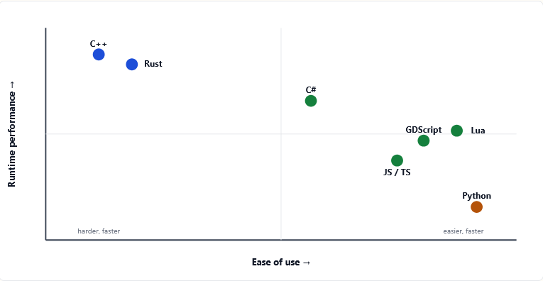

Languages Used in Games

There is not a best language for game development, each language has different strengths and weaknesses. Coding Languages in video games are linked to Game Engines so it can influence your choice on an engine as well.
C++
C++ is the best programming language when looking for performance. Most large AAA studios are using C++ for their performance needs. C++ has downsides as well being that is hard to adopt and learn, development time is longer leading to more costs and requiring more resources from the company up front in comparison to other languages.
C#
C# is used in both Unity and Godot, while primarily being used in Unity as it is the foundation of the Unity Engine. C# offers a balance between performance and developer productivity which is perfect for indie developers.
GDScript
GDScript is the native language of the Godot engine. GDScript was built for Godot engine and has become one of the most beginner-friendly game programming languages. It shares similar syntax to Python and is integrated into Godot seamlessly working in the engine or writing the code both work well together.
Example in GDScript:
This code will apply gravity when the character is airborne. It shows a very simple syntax and makes sense just looking at the code.
if not is_on_floor():
velocity += get_gravity() * delta